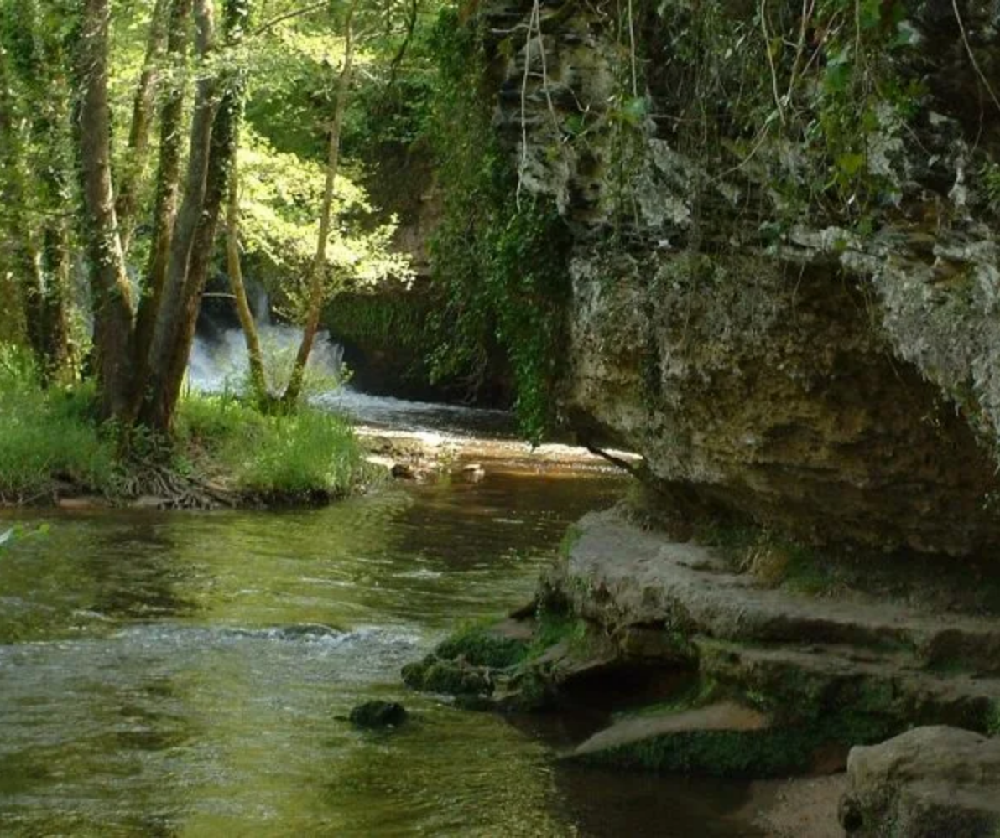

Quel est l’impact des LGV sur les espaces naturels ?
Ce qu'ils disent :
Les Région Nouvelle-Aquitaine et Occitanie « seront très attentives à l’excellence environnementale du GPSO ». Le tracé évitera les secteurs les plus bâtis, les zones sensibles. La biodiversité sera maintenue, l’insertion paysagère sera étudiée au mieux, la continuité des parcours des animaux sauvages préservée, la transparence hydraulique maintenue… Les dernières normes de protection contre le bruit ferroviaire et les vibrations seront appliquées. Voilà pour les promesses…
Vérifions les faits.
- L’autorité environnementale donne l’ampleur du désastre dans son rapport sur le GPSO (Source : Avis délibéré de l’Autorité environnementale sur le
Grand Projet Ferroviaire du Sud-Ouest (GPSO) : lignes nouvelles Bordeaux-Toulouse et Bordeaux-Dax,
aménagements au sud de Bordeaux et au nord de Toulouse. Page 14).
Lorsque l’on connaît la nécessité de sauvegarder les zones humides on ne peut être qu’inquiet lorsque l’Autorité environnementale fait la remarque suivante :
« L’étude d’impact semble manifester un certain optimisme sur le succès des mesures compensatoires de recréation de zones humides, optimisme que la bibliographie scientifique ne justifie pas nécessairement. » (p.39).
Le projet lignes nouvelles (327km) Bordeaux-Toulouse et Bordeaux-Dax implique l’acquisition par le Maître d’ouvrage de 336 bâtis dont 38 à caractère commercial et 26 sièges d’activité agricole.
Pour la réalisation de la seule liaison Dax-Espagne (91km) SNCF Réseau estime nécessaire d’acquérir « une centaine de bâtis ».L’enjeu hydraulique et hydrologique est majeur : 790 ouvrages de franchissement de cours d’eau et zones humides : 315 viaducs et ponts cadre, 120 bassins d’écrêtement. En moyenne 1,8 ouvrage de franchissement hydraulique par km de ligne nouvelle ! Le fuseau traverse de nombreux milieux aquatiques : système hydrographique des grands cours d’eau, marais, eaux souterraines et périmètres de captage des nappes aquifères. Ces milieux témoignent d’activités humaines (agriculture des barthes, pêche, tourisme) et sont le réceptacle d’une faune et d’une flore riche et diversifiée. De plus, le projet devra garantir qu’il ne porte aucun préjudice à l’alimentation en eau potable du secteur de la côte, qui ne provient que de captages souterrains.
Aucun de ces problèmes n’est à ce jour résolu.
-
L’autorité environnementale précise : « Sur la seule section Dax-Espagne, plus de 200 rétablissements hydrauliques sont ainsi prévus, dont une cinquantaine en viaduc ou pont ; les bassins d’écrêtement nécessaires sont évalués à 56 (64 pour les 3 présents projets) et les zones humides détruites sont estimées à 120 ha, 250 ha pour les 3 présents projets.» (les trois projets mentionnés correspondant aux lignes à grande vitesse Bordeaux-Dax, Bordeaux-Toulouse, et aux aménagements ferroviaires pris comme une seule opération)
« Cette section se caractérise en outre par :
- 5 sites Natura 2000 susceptibles d’être directement affectés (8 pour les 3 présents projets), l’étude d’impact estimant le futur projet sans effet significatif sur ces sites, ainsi que sur la réserve naturelle nationale du marais d’Orx ;
- le paysage remarquable des premiers contreforts du pays basque et de leurs vallées, avec un habitat souvent dispersé et très réparti sur le territoire, et la destruction de 600 ha environ de bois et forêts ;
- une estimation des compensations nécessaires de l’ordre de 1 000 à 1750 ha (soit les mêmes ordres de grandeurs que pour les 3 présents projets) »
-
La commission d’enquête publique précise : « L’étude d’impact relative aux sites Natura 2000, fait état d’incidences du projet, « de fortes à très fortes », sur les habitats et espèces étudiés. Après les mesures de réduction et de compensation, le dossier affirme que les incidences résiduelles seront, pour les huit sites Natura 2000 concernés, « de faibles à négligeables ». La commission est très réservée sur cette affirmation. » (Conclusions p.26)
- Les Régions ignorent dans leur descriptif les dégâts engendrés par l’implantation d’un carrefour
ferroviaire à trois côtés au cœur de la zone Natura 2000 de la vallée du Ciron où est identifiée et
protégée une population de Cistude d’Europe, en faisant passer la branche Sud-Gironde-Dax à proximité
immédiate d’un site d’importance nationale pour les chauves-souris, le Vallon du Cros à Roquefort (40),
et en balafrant l’ensemble du bassin versant du Ciron dont au moins 30 affluents seraient
affectés.
 Les mises en service des LGV Tours-Bordeaux et Bretagne ont confirmé les nuisances acoustiques et vibratoires induites par le passage des TGV lancés à 320km/h. La levée de bouclier des riverains a contraint le gouvernement à envisager de modifier la législation. Ceci engendre un surcoût sur la mise en œuvre des protections phoniques. Ce surcoût est tel que le comité interrégional des financeurs de la LGV Paris-Rennes propose plutôt des rachats des maisons impactées que des aménagements anti-bruit à la source contre les nuisances sonores du TGV.
Ce n’est pas comme l’affirment les présidents de région « un impact environnemental limité » mais un saccage environnemental étendu !